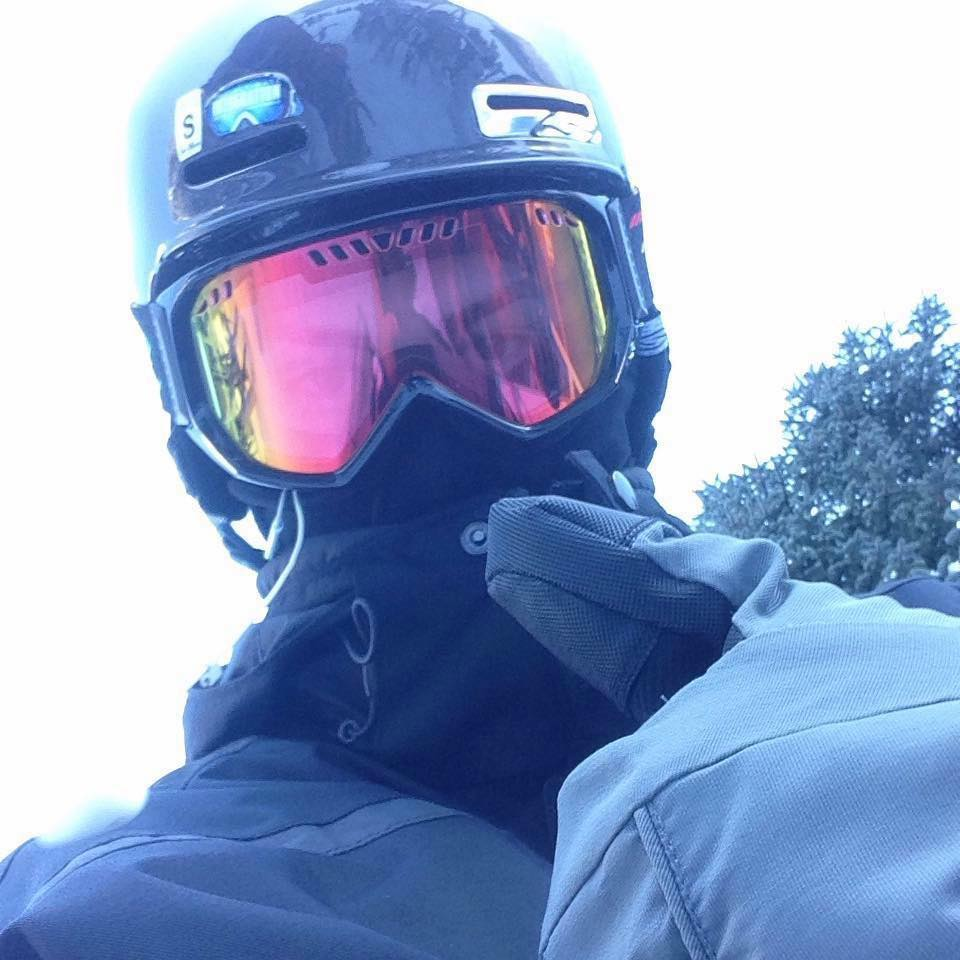

Christopher Diamond

Summary
- Sociable and outgoing
- Cunning technological knowledge
- Concise and clear written communication
- Outstanding problem-solving skills under pressure
- Experience working independently with specific direction, or within a team
Education
-
Associate in Computer Sciences
Hillsborough Community College
August 2016 - April 2021
Work Experience
Kitchen Staff/Waiter/Sushi Chef
Zen Bistro
October 2013 to December 2021
- Provide outstanding service during high volume shifts, serving multiple customers simultaneously.
- Performed various kitchen roles concurrently during high demand shifts.
- Work with management, helping create new menu items and kitchen procedures cutting production time and staff.
- Trained new waiting and kitchen staff.
- Worked together as a team, as well as idenpendently.
- Went above and beyond to ensure duties and responsibilities were fulfilled in accordance to best-practive security.
Sous Chef/Sushi Chef
Catch Twenty Three - Tampa, Fl
- Provide outstanding service during high volume shifts, serving multiple customers simultaneously.
- Performed various kitchen roles concurrently during high demand shifts.
- Work with management, helping create new menu items and kitchen procedures cutting production time and staff.
- Trained new waiting and kitchen staff.
- Worked together as a team, as well as idenpendently.
- Went above and beyond to ensure duties and responsibilities were fulfilled in accordance to best-practive security.
Sushi Chef/Sous Chef
Rice and Spice - Tampa, Fl
Present
- Provide outstanding service during high volume shifts, serving multiple customers simultaneously.
- Performed various kitchen roles concurrently during high demand shifts.
- Work with management, helping create new menu items and kitchen procedures cutting production time and staff.
- Trained new waiting and kitchen staff.
- Worked together as a team, as well as idenpendently.
- Went above and beyond to ensure duties and responsibilities were fulfilled in accordance to best-practive security.
Skills
- Proven ability to quickly adapt, learn, and apply knowledge.
- Cunning technological knowledge.
- Experience working independently, with specific direction, or within a team.
- Outstanding problem-solving skills under pressure.
- Concise and clear written communication.